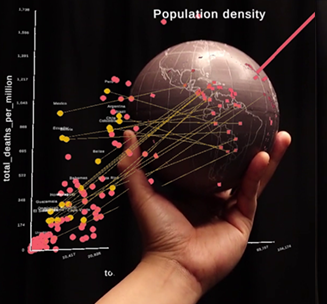

Tangible Globes for Data Visualisation in Augmented Reality

Venue. CHI (2022) Full Paper
Authors. Kadek Satriadi, Jim Smiley, Barrett Ens, Maxime Cordeil, Tobias Czauderna, Benjamin Lee, Ying Yang, Tim Dwyer, Bernhard Jenny
Abstract. Head-mounted augmented reality (AR) displays allow for the seamless integration of virtual visualisation with contextual tangible references, such as physical (tangible) globes. We explore the design of immersive geospatial data visualisation with AR and tangible globes. We investigate the “tangible-virtual interplay” of tangible globes with virtual data visualisation, and propose a conceptual approach for designing immersive geospatial globes. We demonstrate a set of use cases, such as augmenting a tangible globe with virtual overlays, using a physical globe as a tangible input device for interacting with virtual globes and maps, and linking an augmented globe to an abstract data visualisation. We gathered qualitative feedback from experts about our use case visualisations, and compiled a summary of key takeaways as well as ideas for envisioned future improvements. The proposed design space, example visualisations and lessons learned aim to guide the design of tangible globes for data visualisation in AR.